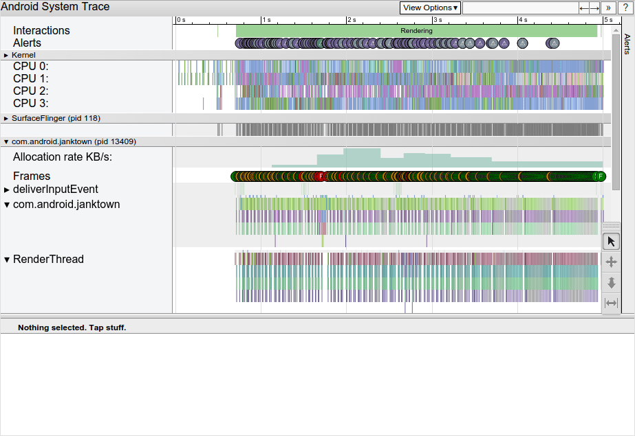
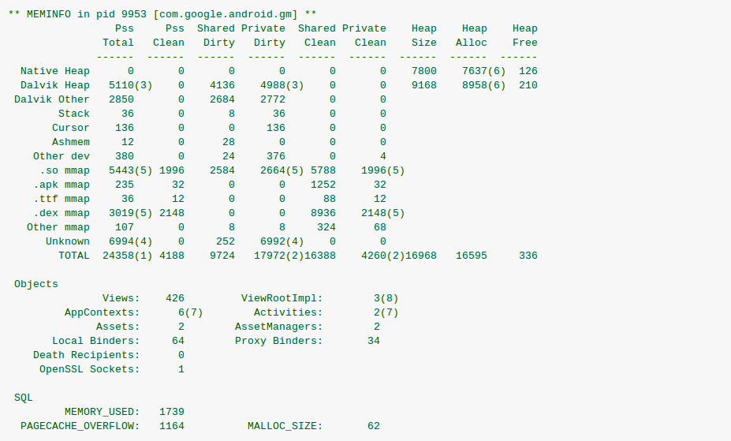
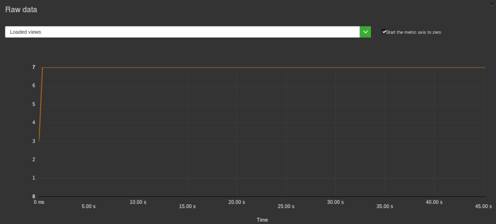

You must know that a qualitative application shouldn’t consume too much resources on a user’s smartphone. It is a requirement for it to be adopted and then used in proper conditions. So, you decided to get down to work and control this consumption of diverse resources (CPU, memory, data, etc), energy, application size etc.
Even if you you are a good patterns and development languages expert, road to hell is paved with good intentions! What toolbox should you start with? Let’s review the tools that will become an Android developer’s bestfriends.
Android Studio
Android Studio now integrates numerous tools that keep track of your application’s resources consumption; the main advantage being the tool is fully integrated in your development environment. Can’t do much closer to day-to-day work than this. However, you will have to go get them in sub-menus and remember to monitor the metrics.
Latest version makes available profiling of network and libraries, such as OKHTTP:

SDK tools: Traceview

Traceview allows the visualization of method calls, time spent in each one… Even though the tool is extremely powerful, you might spend a good amount of time analyzing data. There is also a chance you get lost in the call hierarchy. But overall, this tool is a must-have when it comes to analysis of performance issues (among others!).

SDK tools: Systrace
Systrace is another very interesting profiling tool, letting you visualize information on hardware (CPU work with repartition on CPUs) but also on Android information packages (RenderThread, Event…). Just like any other (good) profiling tool, it provides a lot of info. The drawback we see is the amount of time it might take to process all this information. And quickly, it can turn rather time-consuming.

SDK tools: Dumpsys
Dumpsys is an online module controlling the Android system. You can retrieve numerous information on views, on base… However, the drawback of the solution here is the metrics’ complexity, hence the necessity to spend time analyzing and launching measures. For instance, enter the following command line in order to get information on graphic treatments:
adb shell dumpsys gfxinfo

Developer’s tools in the system
If you’ve activated the developer’s mode already, you will get tools enabling you to measure some metrics such as display perfromance, CPU, etc. This mode is pretty interesting but having to check and launch manually actions on a phone limits its usefulness and power.
You should know that it is possible to highlight drawn zones, making it easier to identify frequent redraws.
Non-SDK-integrated Android tools: Battery Historian
Battery Historian is a tool helping the visualization of information coming from the dumpsys batterystats. Battery discharge is visible simultaneously as system treatment and component use. As a consequence, you can detect potential energy leakage. Limit in this case is that it’s necessary to run the application for a few minutes, which makes the analysis more complex: similar to a profiling tool, with the complexity that comes with it.

Automation tools : GREENSPECTOR

Obviously you can’t expect us to talk about all those tools without mentionning GREENSPECTOR! The tools we mentionned in this article are powerful, but this also translates by a rather important complexity, which requires to be some sort of an expert in order to get the right information out of it. But, pretty frequently, developers use those tools only in complicated crisis situation, and not on a regular nor « monitoring » basis.
Yet, getting figures of resources consumption is a valuable measure for all developers to get throughout the whole development phase. This is why GREENSPECTOR is usable in continuous integration. Other than basic metrics, we integrated part of the expert tools (like Dumpsys) directly in GREENSPECTOR. The goal here is to pair the interface’s simplicity, for a constant monitoring, with the possibility to get more precise information if needed.
Here is for example a graph on Android views when the application launches after a test in continuous integration:

This is a way to measure, thus detect more easily, consumption issues. If needed, a deeper analysis can then be conducted with the other tools we mentionned.